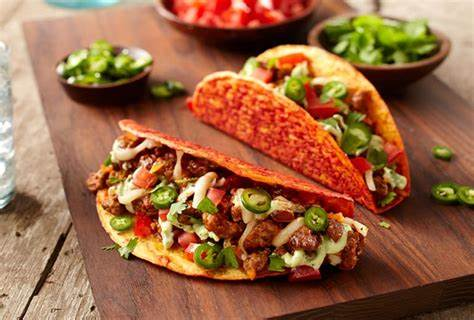

Spicy Tacos

Southern Style Spicy Tacos
Spicy Tacos are not only a Tuesday favorite but good for any day of the week.
All you need to get cooking is your ground beef, some spices and peppers and your good to go! Use this recipe to get cooking for the whole family!
Ingredients
- Taco Shells
- Beef
- Onion (Chopped)
- Tomatoes
- Ground Cumin
- Paprika
- Hot Chili Powder
- Salt and Pepper
Steps
- Heat a tablespoon of oil in a frying pan and fry the chopped onion and chili powder and cumin.
- Next, add the ground beef and break apart until completly chopped and browned. Allow to cook through. (10-15 minutes)
- Add tomatoes and season to taste. Cover and simmer on low heat for up to 30 minutes.
- Next heat up taco shells and serve as desired!